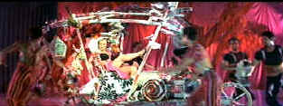

| There's
No Business Like Show Business/B,A- |
| Fox/1954/118/ANA 2.55 |
. I was surprised that
I liked There’s No Business Like
Show Business as much as I did this time out. My memory of the film did not create much
expectation. The script is really little more than a string of musical numbers hung together like a strand of pearls.
The story of the five Monahan's is their act.
Happily, quite a few of the musical numbers are
delightfully executed, even though I find Ethel Merman especially hard to bare. My daughter squawked,
“What a horrible voice.” I second the emotion. Donald O’Connor has a beautiful production
number, A Man Chases a Girl. I never saw O’Connor put over a song with such elegance. The usually
energetic Dan Daily is often a tad morose, but then he is saddled with Ethel Merman as his wife.
Mitzi Gaynor is adorable as Katy Monahan. Her dance numbers with O’Connor are thoroughly
delightful as is the wonderful work for the Monroe telephone number. Johnnie Ray, a hugely popular
crooner at the time, is pretty stiff as the eldest son Steve who chooses the clothe over the
greasepaint. Ray has the strangest way of creating vibrato in his songs with lateral jaw
articulation and for some reason this left my daughter and I in stitches every time.
 |
| We're Having a Heat Wave. ©Fox |
Marilyn Monroe fans will find she’s as curvaceously slinky as ever, but it’s almost a half hour before she gets on the
screen. She’s quite the magnet. Her three musical numbers are fun to watch. After You Get What
You Want is hot breathy rendition; Heat Wave displays more of her curves and Lazy is really stolen
by the wonderful dance/song commentary of Gaynor and O’Connor. The color is simply spectacular. A
measure of production design, costume design and cinematography, almost every scene is
breathtakingly beautiful. It’s hard to believe they squeezed so many colors into those production
numbers.
The source material is outstanding providing a path
for an excellent DVD transfer. Oh, the colors; the colors are a hyper-saturated explosion of
rainbow excitement. They are at all times controlled and delivered beautifully. The transfer
is 2.55 though the package erroneously cites the film as 2.35. There are some significant
imbalances in the Dolby Digital 4.0 mix. During Mitzi Gaynor's section of Alexander's Ragtime
Band her voice is unintelligibly sucked up. There was one other instance that exhibited a
similar but not as severe problem. Otherwise, this is an upbeat musical mix with a nice splashy
recording.
|
|
|
|

Selections from the Feature Archive
include articles on Akira Kurosawa, Frank
Darabont, Blonde Bimbos, Hollywood Street Gangs, or Vietnam: The
Hollywood Pariah, and many more....
.jpg)
Screen Voices and style of delivery often stamp an actor's screen
image indelibly. Click the lips to read more.

The
Movie Poster Archive includes extensive poster images from the films of stars like Susan Hayward,
Kirk Douglas, Katharine Hepburn and many more. Our featured star is Doris Day.

A new Films on Disc space dedicated to purging accumulated home
theater angst and other movie related frustrations, with a measure of praise to balance the
vitriol. The first column takes on:
Inserts and the Pop-Up Window

City of
Industry/B+,B+

A heist delivered in simple strokes and sudden fury. Harvey Keitel
is relentless.

Choko
Movie Posters

The popular Paris movie poster store
makes it's way to the Internet with an outstanding selection of French Movie Posters. Many
beautiful images on display in a searchable data base.

The home of John Tisch's invaluable Poster Price Almanac. Every serious poster collector
uses the Almanac as a reference.

Terrific resource for learning about the ins and outs of movie
poster collecting.
|